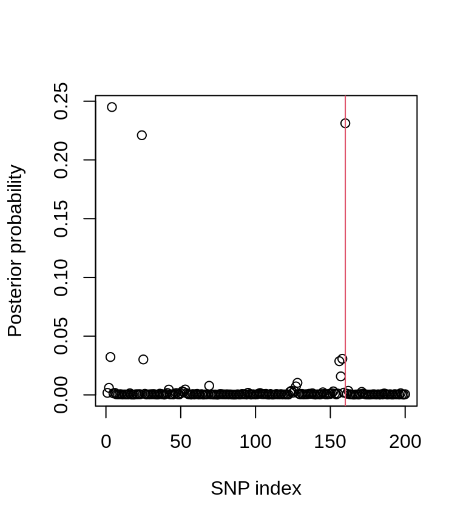

corrected-coverage.RmdThis guide will show users how the corrcoverage package can be used for statistical single causal variant fine-mapping, including obtaining an accurate coverage estimate for the causal variant in a credible set (corrected coverage estimate). This package is specific to credible sets obtained using the Bayesian approach to fine-mapping, described by Maller et al. here, which utilities approximate Bayes factors for genetic association studies described by Wakefield here.
The corrcoverage R package requires only GWAS summary statistics to provide users with a corrected coverage estimate that the true causal variant is contained within the credible set, for example calculating that a 90% credible set actually has 99% probability of containing the true causal variant. In this vignette, we walk-through how the corrcoverage R package can be used to perform single causal variant Bayesian fine-mapping and to derive a corrected coverage estimate.
Firstly, load the library.
This package is intended for use on summary statistics obtained from GWAS, such as observed \(Z\)-scores. For the purpose of this vignette, we will simulate artificial haplotypes and GWAS data using the simGWAS package. Please refer to the walkthrough guide here from which the following is taken.
# simulate reference haplotypes
nsnps <- 200
nhaps <- 1000
lag <- 6 # genotypes are correlated between neighbouring variants
maf <- runif(nsnps+lag,0.05,0.5) # common SNPs
laghaps <- do.call("cbind", lapply(maf, function(f) rbinom(nhaps,1,f)))
haps <- laghaps[,1:nsnps]
for(j in 1:lag)
haps <- haps + laghaps[,(1:nsnps)+j]
haps <- round(haps/matrix(apply(haps,2,max),nhaps,nsnps,byrow=TRUE))
snps <- colnames(haps) <- paste0("s",1:nsnps)
freq <- as.data.frame(haps+1)
freq$Probability <- 1/nrow(freq)
sum(freq$Probability)## [1] 1We specify the causal variant (CV) and it’s effect on disease, as an odds ratio. One causal variant is chosen since the Bayesian approach to fine-mapping relies on the assumption of one causal variant per region, which has been typed in the study.
Then, we simulate marginal \(Z\)-scores. Here, we consider a (relatively small) GWAS with 5000 cases and 5000 controls.
z0 <- simulated_z_score(N0=5000, # number of controls
N1=5000, # number of cases
snps=snps, # column names in freq of SNPs
W=CV, # causal variants, subset of snps
gamma.W=log(OR), # log odds ratios
freq=freq # reference haplotypes
)
length(z0)## [1] 200## [1] -1.889831 -2.534196 -3.139531 -3.753833 -1.821278z0 is a vector of marginal Z scores for the SNPs in our genomic region.
The ppfunc function is used to convert the marginal \(Z\)-scores to posterior probabilities of causality. The ppfunc function also requires a value for \(V\), the variance of the estimated effect size, which can be calculated using the Var.data.cc function. The prior standard deviation of the effect size, \(W\), is an optional parameter with a default value of 0.2, which is shown to be a robust choice through our analyses.
N0 <- 5000 # number of controls
N1 <- 5000 # number of cases
varbeta <- Var.data.cc(f = MAF, N = N1+N0, s = N1/(N0+N1)) # variance of
# estimated effect size
postprobs <- ppfunc(z = z0, V = varbeta)
plot(postprobs, xlab = "SNP index", ylab = "Posterior probability")
abline(v = iCV, col = 2)
The posterior probability plot shows the location of the causal variant (red line).
The credset function in the corrcoverage package is used to obtain a 90% credible set using the Bayesian approach for fine-mapping. In brief, the function follows the standard steps from Maller et al.’s approach:
The credset function reports the variants in the credible set, the claimed coverage1 (the sum of the posterior probabilities of the variants in the set) and the number of variants in the credible set (nvar). If the CV parameter is supplied by the user (e.g. in simulation studies where the CV is known), then the output also includes a binary indicator of whether the causal variant was contained in the credible set.
Let’s use the credset function to obtain a 90% credible set.
## $credset
## [1] 4 160 24 3 158 25 156 157 128 69 127 2 53 42 124 162 126
## [18] 152 51 123 171 52 145
##
## $claimed.cov
## [1] 0.9007093
##
## $nvar
## [1] 23# is the true CV contained within the credible set?
thresh <- 0.9
credibleset <- credset(pp = postprobs, CV = iCV, thr = thresh)
credibleset## $credset
## [1] 4 160 24 3 158 25 156 157 128 69 127 2 53 42 124 162 126
## [18] 152 51 123 171 52 145
##
## $claimed.cov
## [1] 0.9007093
##
## $covered
## [1] 1
##
## $nvar
## [1] 23The 90% credible set has a claimed coverage of ~90% and contains the true causal variant. In the literature, authors would typically report that they have found a 90% credible set which they are at least 90% confident contains the true causal variant.
Note that if the variants are named in the pp vector, then the $credset output would contain variant names rather than their indices.
Suppose we are suspicious of this coverage estimate (90% in our example) and wish to find a more accurate estimate using this fancy new package. The corrcov function can be used, which requires the following parameters to be specified:
z (vector of marginal \(Z\)-scores)f (vector of minor allele frequencies)N0, N1 (number of controls and cases respectively)Sigma (SNP correlation matrix)thr (threshold used to derive the credible set)Note that if the estimated effect size coefficients (bhat) and their standard errors (sqrt(V)) are known instead of \(Z\)-scores and minor allele frequencies, then the corrcov_bhat function can be used analogously.
## Corrected.Coverage Claimed.Coverage Threshold
## 0.9832236 0.9007093 0.9In our example, the 90% credible set may have nearer to 98% coverage of the causal variant in the credible set.
For the purpose of this vignette and to assess the accuracy of this corrected coverage estimate, we simulate more credible sets from the same system and calculate what proportion of these contain the true causal variant.
z0.tmp <- simulated_z_score(N0=5000, # number of controls
N1=5000, # number of cases
snps=snps, # column names in freq
W=CV, # causal variants, subset of snps
gamma.W=log(OR), # log odds ratios
freq=freq, # reference haplotypes
nrep = 5000 # 5000 simulations
)
pps <- ppfunc.mat(zstar = z0.tmp, V = varbeta) # find pps
cs <- apply(pps, 1, function(x) credset(x, CV = iCV, thr = thresh)$cov)
true.cov.est <- mean(cs)
true.cov.est## [1] 0.981The estimated empirical coverage is found to be approximately 98%, showing that our corrected coverage estimate was indeed accurate - far more so than the standard claimed coverage of ~90%.
## Empirical.Coverage Corrected.Coverage Claimed.Coverage Threshold
## 0.981 0.9832236 0.9007093 0.9This vignette has shown readers how to use the corrcoverage R package to obtain a more accurate coverage estimate of the causal variant in a credible set. Obtaining accurate coverage estimates will allow researchers to report more specific findings from their fine-mapping analysis, and we hope that our correction will be used as an extra step in the single causal variant fine-mapping pipeline. Finally, reporting these corrected coverage estimates will allow for more efficient allocation and expenditure of resources in the laborious follow-up wet lab analyses of the variants in the credible set.
This method can be extended to find a corrected credible set, please see https://annahutch.github.io/corrcoverage/articles/New-Credible-Set.html.
Maller et al., 2013 Maller, J. B. et al. Bayesian refinement of association signals for 14 loci in 3 common diseases. Nature Genet. 44, 1294–1301 (2012)
simGWAS: Mary D Fortune, Chris Wallace; simGWAS: a fast method for simulation of large scale case–control GWAS summary statistics, Bioinformatics, bty898 (2018)
Wakefield, 2009 Wakefield, J. Bayes factors for genome-wide association studies: comparison with P-values. Genet. Epidemiol. 33, 79–86 (2009)
Researchers commonly use the size of the credible set as an estimate of the coverage probability of the causal variant in the set. It is believed to be a slightly better indicator of coverage than the threshold (claimed coverage > threshold by virtue of the method).↩